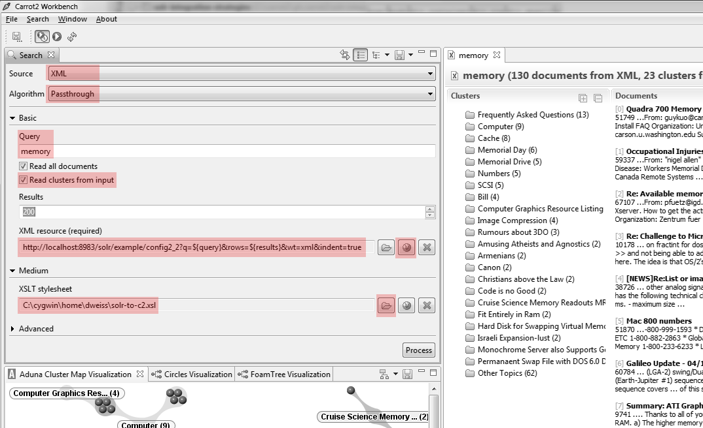
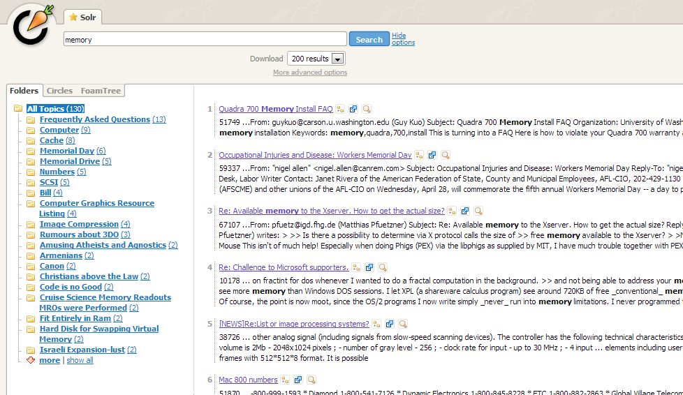
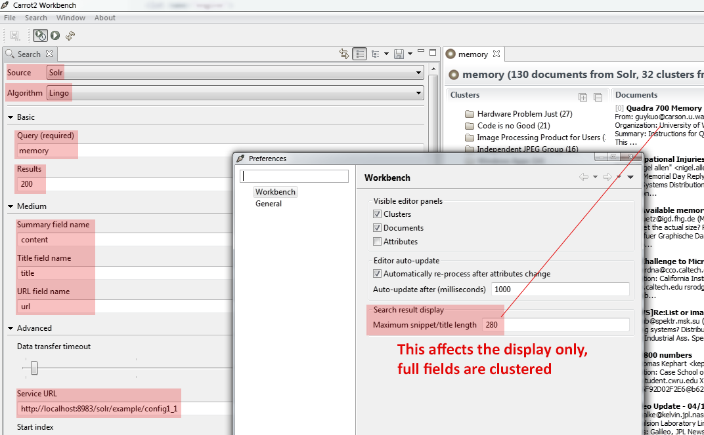

Adding clustering of search results to Apache Solr can be done in several ways,
depending on where the clustering takes place, which fields are picked for clustering
and how they are transformed before they are clustered. This document discusses
several of these strategies.
Preparations
The following github repository contains code samples
and configurations used in the remaining part of this document.
cd solr-integration-strategies
cd carrot2-3.6.3/
wget -c -t0 -T30 http://www.us.apache.org/dist/lucene/solr/4.2.1/solr-4.2.1.tgz
tar -zxf solr-4.2.1.tgz
Solr configuration files contain hardcoded paths. Use exactly the same Solr version
or alter the configuration files accordingly.
This example contains a demo Solr configuration (including data schema)
and some sample documents from the 20-newsgroups collection. The following command starts
Solr and imports these documents. Solr should be started from another shell session
since it won't return to shell.
cd solr-4.*
cd example
java -Dsolr.solr.home=../../solr-home -jar start.jar
To import example documents execute the following commands from top-level repository checkout folder:
cd solr-docs
java -jar post.jar 20newsgroups
An overview of Solr and Carrot2 configurations
There are several axes which diversify the configuration of Solr and
Carrot2:
Where does clustering take place (inside Solr or outside Solr)?
What data is fed into the clustering process (entire contents of stored fields, query-in-context snippets)?
Are users experimenting with clustering parameters or is clustering preset on the server for all users?
For example the
web application front-end to clustered search results
will be shared by all users, whereas users of
Carrot2 Workbench will need
a raw stream of search results which is then clustered on their machine.
All examples in this chapter assume a certain fixed choice in the above set of configuration
options. Pick the one closest to your own.
Clustering inside Solr, entire fields
This configuration clusters the selected fields of Solr documents returned
for a given query on Solr side, as shown in the figure below.
We will consider a few variants of this configuration in which either full content of fields or just their
fragments are used for clustering.
Warning! Clustering full content of large fields may be very slow and
may result in out of memory errors on the server. This configuration should only be
used on sensibly sized fields or when such behavior is desired.
Solr setup (JAR dependencies)
Modify solrconfig.xml. Include Carrot2 JARs distributed with Solr and any
other JARs needed for clustering algorithms (if using Lingo3G, for example). Note that
the paths provided to lib are resolved relative to the core's directory (unless they
are absolute). This can be tricky. For our layout the configuration is:
Solr setup (search component)
Configure a searchComponent which does the actual clustering. Solr's
wiki has detailed
instructions covering all options. For this example we will configure a single
search component with one algorithm (the open source Lingo).
Once we have a clustering search component we can create a handler that will cluster
search results. In this configuration all fields of matching documents
are returned, followed by information about clusters.
Note the mapping between Solr document's fields and "logical" document sections requried by Carrot2.
The carrot.url field must be something unique because clusters in the response are referenced by
this identifier. Also note the default number of search results to retrieve is 100. Clustering search
results will be meaningful if more than 100 documents are available to the algorithm. This does add up to each query's cost on
Solr, in addition to the clustering itself.
A query sent to this handler will fetch a large file, we will try to do something with this in the
next section:
Solr setup (search handler returning a subset of fields)
The problem is that the response contains content field which is large. We can restrict
the result to only contain name and title by modifying the fl
parameter. Note that clustering will still fetch the entire content field
internally so this does not affect clusters. Actually, if only the clusters are needed
one could restrict the fields to just the ID field (name in this example).
If the response documents should be displayed (and contain clusters as well) then the middle
ground between skipping fields and returning full fields is to use
the highlighter to display a contextual fragment of the field around the search
hit. This limits the size of the response and allows some insight into the document.
Clusters are unaffected in this configuration (full content field is still clustered).
This configuration is similar to clustering full fields inside Solr but takes
only a certain number of text fragments around search matches. Doing so, perhaps contrary
to the intuition, has several benefits:
increased speed of clustering due to smaller amount of data fed to the algorithm,
more query-focused clusters due to the fact that the text around the search matches
is typically closely related to the query itself.
The initial configuration setup (JARs, search components) is identical to the one shown in
previous configurations. We will focus on search handlers only.
To configure clustering to use query-in-context snippets instead of full field content,
pass carrot.produceSummary attribute in Solr's handler configuration, as shown below:
For larger fields the difference would be even more pronounced.
Note: The set of clusters returned from full-field clustering will be different than
that returned from clustering based on fragments. This is natural as the clustering algorithm "sees"
a different aspect of the input and produces a different categorization. Consider a human presented
with 100 documents -- he or she would categorize them differently if taken as a whole,
compared to the situation when only an excerpt of a specific context is provided.
Displaying Solr-clustered results in Carrot2 webapp and Workbench
Typically, the clustering process would take place outside of Solr,
on a dedicated Carrot2 webapp server or proxy, as shown below.
When using the clustering Workbench, clustering takes place on the user side:
Even though not designed for such a use case, Carrot2's
web application and the Workbench can serve as front-ends
for Solr-clustered search results (starting from Carrot2 version
3.6.3). For both applications the trick is to use an XSLT stylesheet that will translate
Solr's XML output into Carrot2 results format and use a pass-through algorithm
that does not perform any clustering, only copies input clusters to the output. We will then have
the following situation:
And the Workbench will connect to Solr directly as well:
Solr's output can vary depending on the schema so there is no one solution that fits
all the possible Solr configurations. For our examples we will use Solr's handler that returns
highlighter snippets and clusters described above (configuration /config2_2),
combined with an XSLT template
that adapts the result for Carrot2. Note the name field
is used as the document identifier.
The stylesheet performing the conversion is available here: solr-to-c2.xsl.
Once downloaded, the Workbench's source configuration can be set up to fetch documents from Solr and show clusters
contained in the response (see highlighted fields in the figure below).

The webapp can be configured in a similar fashion by modifying the default
component suite and preconfiguring an XML document source. Start by fetching the WAR file
of the webapp:
wget http://download.carrot2.org/stable/3.6.3/carrot2-webapp-3.6.3.war
unzip -d carrot2-webapp carrot2-webapp-3.6.3.war
cd carrot2-webapp/WEB-INF/suites
vi suite-webapp.xml
Edit suite-webapp.xml to point at the Solr instance and contain just the pass-through algorithm.
Solricons/xml.gifXBlah Blah
The address and remaining attributes of Solr need to be placed into source-xml-attributes.xml.
Finally, the XSLT stylesheet must be available in classpath for the XML document source component. Copy it over
to WEB-INF/classes/solr-to-c2.xsl. When this context (or repacked WAR file) is deployed in a servlet
container it will query Solr instance and displays the clusters received from it.

Note that the above examples stretch the functionality of Carrot2 examples to what they
were not designed for. In production environments you will probably want to write your own handler of
Solr search/ clustered results that doesn't go through XSLT overhead, etc.
Clustering of entire fields outside Solr
We have already visited this setup when talking about connecting Workbench to display Solr's clusters:
This is pretty much what SolrDocumentSource does by default. You just need to map
Carrot2 logical document sections (title, snippet, url) to Solr's schema and make sure
the handler returns those fields as described when discussing different handler
configurations above.
Note that full fields clustering outside Solr may incur large network overhead penalty associated
with fetching long fields over the network and may result in odd-looking long
snippets if stored Solr fields are lengthy. For Workbench this can be tuned inside preferences, as shown below.

Clustering of query-in-context fragments outside Solr
Because Solr's output depends on the schema and configuration of handlers this configuration is identical
to the one shown before, where query-in-context fragments were clustered inside Solr. An XML component
needs to be configured with an XSLT stylesheet that copies highlighter fragments to their corresponding
Carrot2 XML locations inside snippet field. The only difference to previously
shown configuration is that one should pick a real clustering algorithm instead of the
pass-through dummy. Obviously clustering on Solr side is not needed anymore.